戊午日
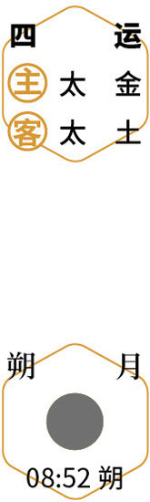
 添衣
添衣仲秋｜节气｜ 白露 ｜时间｜ 九月七日至九月廿三日
今年白露需特别注意的健康问题：发热、肝火、耳鸣、胆结石
原料：梨、红酒、丁香粉。
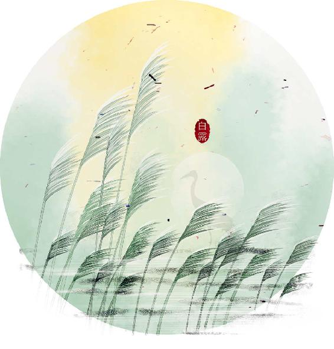
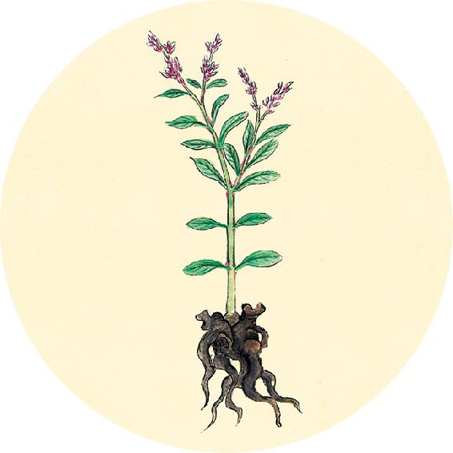
节气食方
红酒炖梨
原料：梨、红酒、丁香粉。
做法：
1. 梨用面粉水泡15分钟后洗净，连皮带核一起切成小块（核、皮不要扔）。
2. 锅内放入梨块，洒点丁香粉，倒入少量红酒，到淹没梨块一半的位置即可。
3. 不要盖锅盖，用小火炖煮。煮到梨块变红，锅内还剩一点点汁时，关火起锅。
功效：润肺、美肤。
脉实以坚，谓之益甚。
——黄帝内经·素问·玉机真藏论
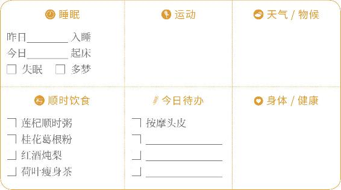

添衣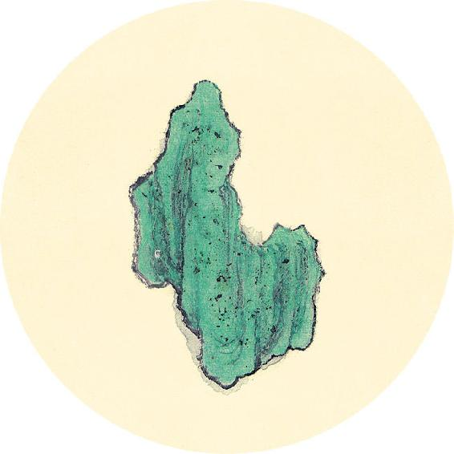
二十四节气茶养生
今年白露节气品茶推荐：冬瓜皮茶。
冬瓜皮清湿热，能消除皮肤表面的浮肿。
软化血管茶
原料：冬瓜皮6克、山楂15克、乌龙茶3克。
做法：沸水冲泡，代茶饮。有条件煮水更佳。
功效：增强血管弹性、降血脂、预防动脉硬化，
适合有血管硬化问题的老年人秋冬季饮用。
【释义】病人的脉实而坚，病情加重。
思亲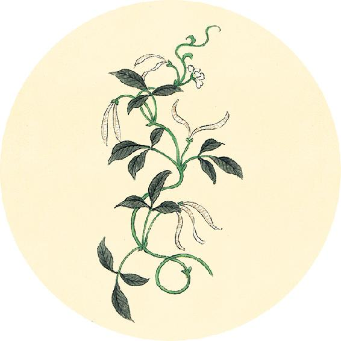
健康提示
白露节气的养生功课：清肺润肺。
白露节气，白天热，早晚凉，注意防风寒。
今年白露的养生特殊重点——
今年白露节气，雨水比往年多，继续祛湿。
保养重点：胆、消化系统。
容易出现的问题：发热、肝火、耳鸣、胆结石。
脉逆四时，为不可治。
——黄帝内经·素问·玉机真藏论
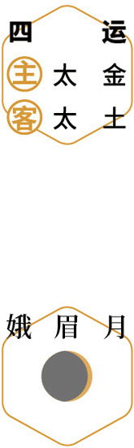
食藕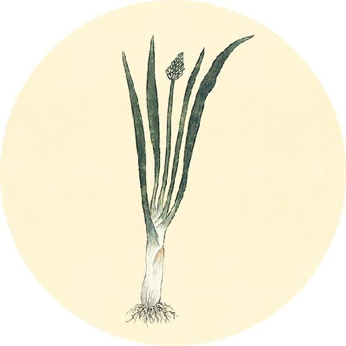
节日食方
教师的职业需要长时间讲话，容易产生声带小结或声带息肉，导致咽喉不适、声音嘶哑，可以送老师一份调理的茶饮。
橘红开音饮
原料：干山楂600克、陈皮20个、红糖40小块。（20日量）
做法：分为20份，装入茶包袋中，饮用前放入保温杯用沸水闷泡。
功效：适合说话过多引起长期声音嘶哑、声带小结或息肉的人日常调理。
【释义】病人的脉与当季的气候不相应，病不可治。
谢师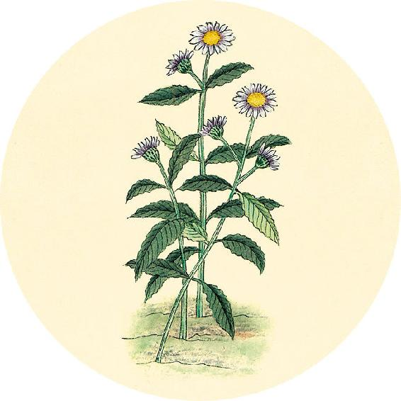
一候反思
前两个月是否经常出现：
下午和傍晚脸色变差 □ 是 □ 否
白天爱打瞌睡 □ 是 □ 否
很容易感到累 □ 是 □ 否
手脚心有脱皮现象 □ 是 □ 否
有任何一个答“是”，将黄芪与荷叶瘦身茶（见8月16日）一起饮用。
所谓逆四时者，春得肺脉，夏得肾脉，秋得心脉，冬得脾脉，其至皆悬绝沉涩者，命曰逆。
——黄帝内经·素问·玉机真藏论
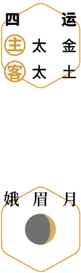
郊游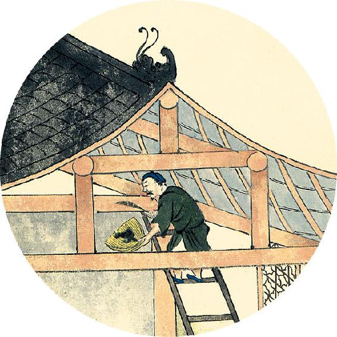
健康提示
从白露开始进入秋天的第二个月——仲秋。这个月养生的重点是“水”。
养生关键词是：滋阴润肺。
上半月清“温燥”，重点是清肺润肺。
下半月防“凉燥”，重点是滋阴润燥。
这个月人体容易出现水液调节失衡、上燥下湿的现象。
可翻到9月17日和9月27日进行自测。
【释义】所谓脉与四季相逆，就是春得肺脉，夏得肾脉，秋得心脉，冬得脾脉，而且脉来的时候都是独见而沉涩，这就叫逆。
赏秋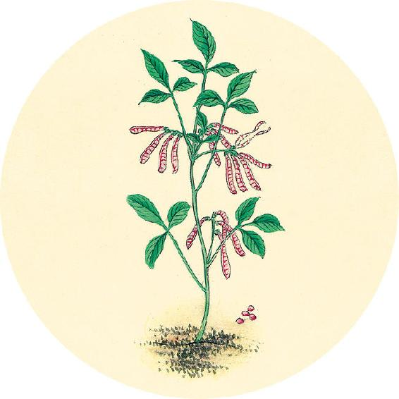
节日食方
下周就到中秋节，传统习俗讲究吃的五种食物，都适合仲秋这个月养生。
中秋必吃的五种食物
1. 冬瓜：清热祛湿。
2. 螃蟹：滋肝养胃。
3. 柚子：消积止咳。
4. 栗子：补肾强骨。
5. 桂花：养肺调肝。
四时未有藏形，于春夏而脉沉涩，秋冬而脉浮大，名曰逆四时也。
——黄帝内经·素问·玉机真藏论
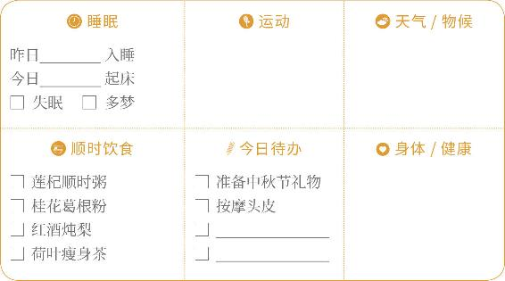
备节礼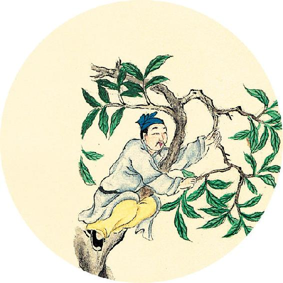
节日食方
中秋前后，桂花开放，此时赏桂花是一件赏心悦目的雅事。还可以用桂花来醒酒。
中秋节茶方：桂香醒酒汤
原料：桂花3克、乌梅6个、蜂蜜适量。
做法：沸水闷泡。
中秋宴饮之后，如果肠胃不舒服，有一点恶心的感觉，喝桂香醒酒汤最合适。
【释义】脉象中当季的脏气没有显形，春夏季节反见沉涩的脉象，秋冬季节反见浮大的脉象，这叫逆四时。
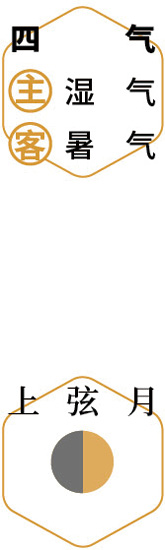
赏桂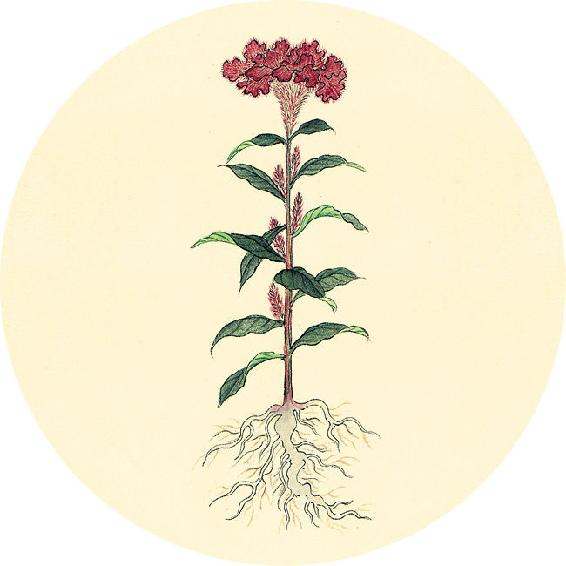
健康提示
淋巴瘤的发病高峰在15～20岁以及50岁左右，经常熬夜也是一个可能的致癌因素。
淋巴结自检的方法：将食指、中指、无名指并拢，指腹平放于皮肤按压滑动，可以打圈或者走直线。
自检的重点部位：耳前、耳后、枕部(后脑下部)、下颌、颈部、锁骨上窝、锁骨下窝、腋窝、肱骨滑车上、腹股沟、腘窝（膝盖窝）。
黄帝曰：余闻虚实以决死生，愿闻其情。岐伯曰：五实死，五虚死。
——黄帝内经·素问·玉机真藏论
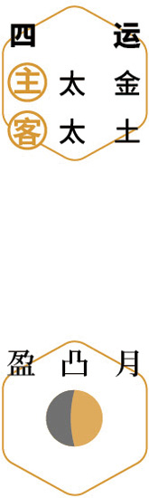
查病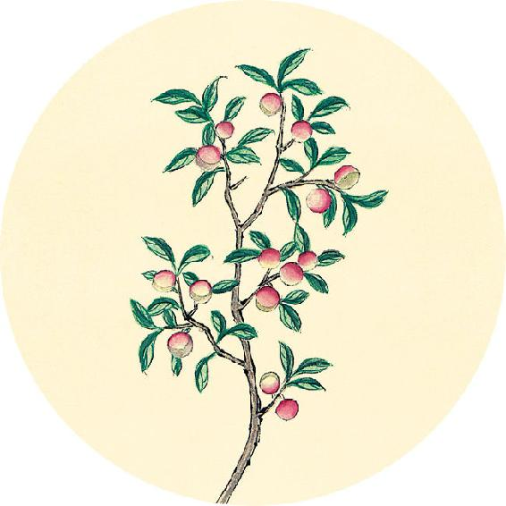
健康提示
人体的大脑每天都在高强度地工作，耗用人体1/4的能量，因此会产生大量垃圾蛋白和生物废物。每天夜晚睡眠是大脑的排毒时间，如果睡眠不好，脑部的垃圾蛋白就不能及时排出，会形成团块，产生毒性，引发各种脑健康问题。
保持脑健康的方法：不熬夜、睡中药枕、吃提升睡眠质量的饮食方，例如，酸枣仁、桑叶、桂圆、百合、莲子等。
【释义】黄帝说：我听说通过看虚证、实证可以预先判断病人的生死，希望听听其中的道理。岐伯说：有五实的死，有五虚的也死。
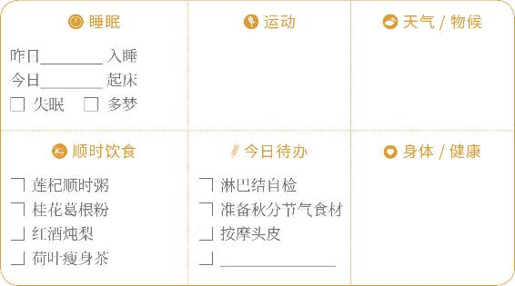
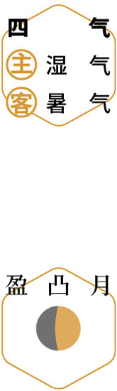
护脑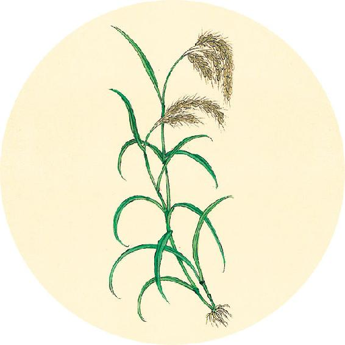
二候反思
身体内是否有“浊水”？
下巴经常长痘 □ 是 □ 否
尿频且小便发黄 □ 是 □ 否
女性白带多且有异味 □ 是 □ 否
痰多发黄 □ 是 □ 否
有各种炎症（膀胱炎、尿道炎、肾盂肾炎、阴道炎、前列腺炎等） □ 是 □ 否
以上有一个答“是”，说明体内有“浊水”，需注意祛湿热。
脉盛、皮热、腹胀、前后不通、闷瞀（mào），此谓五实。
——黄帝内经·素问·玉机真藏论
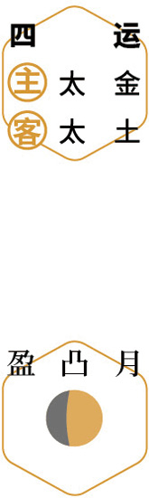
小宴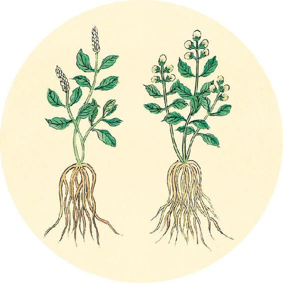
健康提示
中秋时节（仲秋之月）养生，要给身体补充“好水”，排出“浊水”，让体内的水得到净化并滋养身体，让整个人像月亮一样清明，由内而外地发出光彩。
中秋节饮食
汤：送子蟹汤（见9月24日）
酒：青梅酒。小满泡的青梅酒现在喝正好。
茶：桂香醒酒汤（见9月14日）
果：柚子、栗子。
【释义】脉盛（是心受邪盛）、皮肤热（是肺受邪盛）、腹胀（是脾受邪盛），大小便不通（是肾受邪盛），心胸烦闷（是肝受邪盛），这叫作五实。
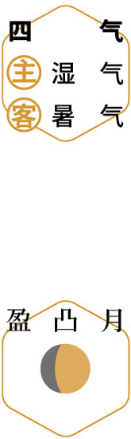
观露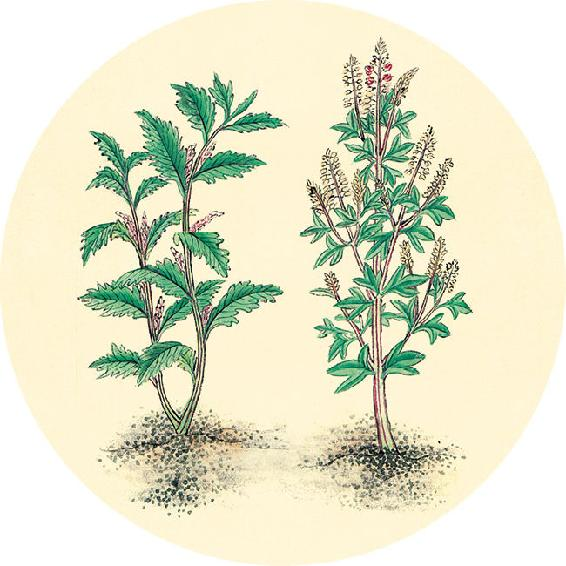
健康提示
吃“无糖月饼”就健康吗？
大多数“无糖月饼”其实并非真的无糖。糖有两类：一类是蔗糖、果糖、麦芽糖等甜味糖；一类是多糖，我们最常吃的淀粉，就属于多糖。
一个无糖月饼，外面有面粉，里面又有各种含淀粉的馅料，不是没有糖，只是没有额外加蔗糖。为了口味，还会加一些添加剂。
脉细、皮寒、气少、泄利前后、饮食不入，此谓五虚。
——黄帝内经·素问·玉机真藏论
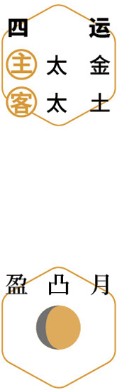
待月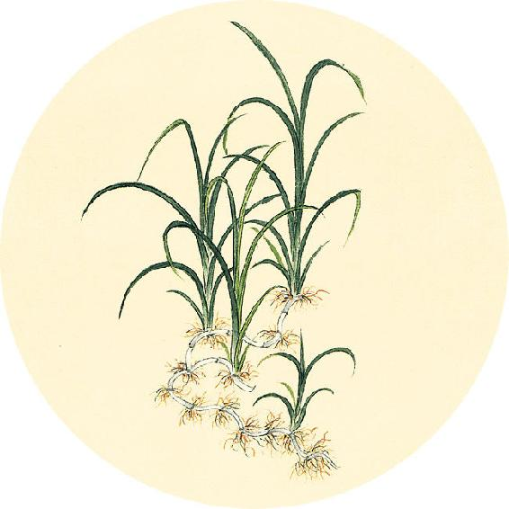
健康提示
中秋节吃月饼的养生意义
中秋节，往往在白露、秋分期间。早晚风寒极易袭肺。
肺统管人一身之气。若肺气虚，人会感觉精神不振、容易疲劳、皮肤松弛。
将植物的种仁比如杏仁、莲子之类，加工成精细粉末搭配食用，拌以纯正的蜂蜜，补益肺气最佳。
这些就是传统月饼的馅料，中秋节吃月饼的养生意义，正在于此。
【释义】脉细（是心气不足），皮肤冷（是肺气不足），气短（是肝气不足），腹泻遗尿（是肾气不足），饮食不入（是脾气不足），这叫作五虚。
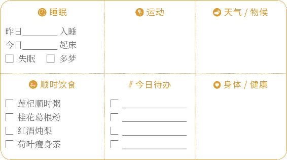
叩齿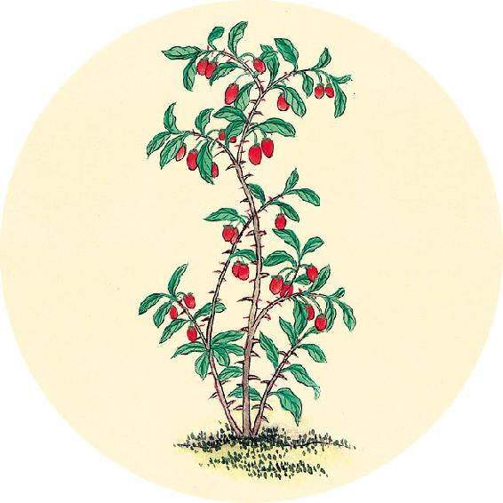
食材准备
后天进入秋分节气。
1. 银耳桑椹羹
原料：银耳、桑椹。
2. 送子蟹汤（每周一次）
原料：螃蟹、冬瓜、生地、生姜、黄酒、肥肉。
3. 辛丑岁五气保健方：五味茱萸梅子汤（从秋分喝到立冬，做法见10月5日）
4.三花陈皮茶
原料：玫瑰花、金银花、茉莉花、川陈皮、甘草。
5.辛丑岁全年保健方：莲杞顺时粥
原料：炒荷叶、川陈皮、莲子、枸杞子、茯苓、粥料。
浆粥入胃，泄注止，则虚者活。
——黄帝内经·素问·玉机真藏论
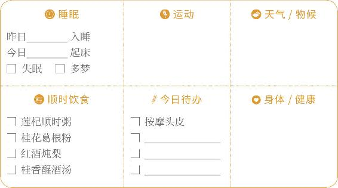
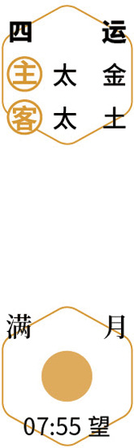
团圆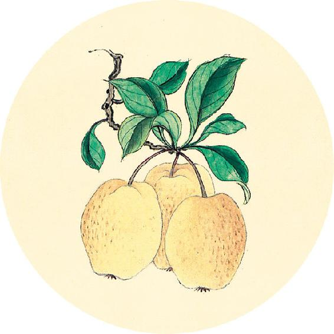
健康提示
春分、秋分、夏至、冬至日这四天，分别是春、夏、秋、冬的中点，是一个季节从前一半转换到后一半的节点，所以古人将它们之前的一日称为“离日”。在“离日”宜静养，舒缓身心，以便平顺地度过时节的更替。
节气总结备
红酒炖梨________次 荷叶瘦身茶________次
桂花葛根粉________次 莲杞顺时粥________次
莲杞顺时粥________次
身体哪些方面有改善_________________________
【释义】吃些浆粥，让胃气慢慢恢复，泄泻止住了，那么有五虚证的人也能治好。
静养